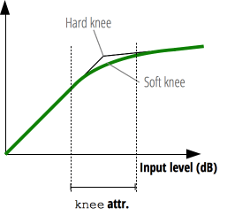

{{ APIRef("Web Audio API") }}
The knee property of the {{ domxref("DynamicsCompressorNode") }} interface is a k-rate {{domxref("AudioParam")}} containing a decibel value representing the range above the threshold where the curve smoothly transitions to the compressed portion.
The knee property's default value is 30 and it can be set between 0 and 40.

var audioCtx = new AudioContext(); var compressor = audioCtx.createDynamicsCompressor(); compressor.knee.value = 40;
An {{domxref("AudioParam")}}.
Though the {{domxref("AudioParam")}} returned is read-only, the value it represents is not.
var audioCtx = new AudioContext(); var compressor = audioCtx.createDynamicsCompressor(); compressor.knee.value = 40;
See BaseAudioContext.createDynamicsCompressor() for more complete example code.
{{Compat}}